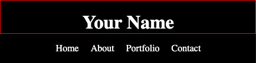
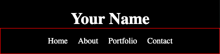
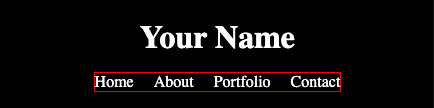
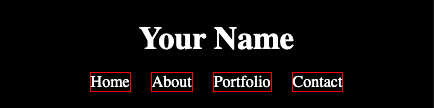

Frontend Development
Navigation
overview: Building responsive navigation step by step.
Run frontend foundations starter repository
cd out of readings and into dothis
then code starter-front-end-foundations-main
The files for this lesson are stored in the navigation folder; open the index.html file with vscode live server
Mobile-first approach
You'll be building the navigation that you can see in the image below:
For each selector, the html element that the css selector targets will be marked by a red border (border: 1px solid red;). This will help you visually connect the code with the element and the space that it occupies in each of images below.
Style the header
The header selector is the primary container to hold both the name of your page and its navigation.
Using the style.css sheet set a black background and add a margin-bottom of 40 pixels.
Style the title of your document

The header h1 selector targets the title of your document. Adding a unique font will give this text more style, too.
Using the style.css sheet set the text color to white, center the text, remove default margins, and top padding of 20 pixels.
Style the container for the navigation

The header nav selector targets the container for the navigation. Targeting only the nav container that's within the header allows for other navigation containers to be styled differently in the footer or elsewhere on the page.
Using the style.css sheet set display to flex and set the justify-content to center.
Style the unordered list

This header nav ul selector targets the unordered list that is within the header's nav container.
Using the style.css sheet set display to flex, remove the padding on the left, and remove the default bullet points.
Style the anchor tags of the list items

The header nav ul li a selector targets the anchor tag (link) of the list items within the unordered list that is within the header's nav container.
Using the style.css sheet set the text color to white, remove the underline from the link, and add a margin of 20 pixels to the right of each navigation link.
Style the last list item's anchor
The header nav ul li:last-child a selector targets the last list item's contained anchor (link).
Using the style.css sheet remove the margin to the right of the last anchor.
We have created the navigation bar for the mobile view using flexbox, now add a media query for the desktop view on the style.css sheet.
Linking navigation
There are different navigation rules depending on if you are creating a single-page website or a multipage website.
Single-page navigation
When you create a single-page website, you'll add anchor IDs to the sections or other primary containers in your page. Don't forget to add the hash symbol # in the link; this will tell the link to look for the anchor ID somewhere on the page and jump to it when clicked.
Looks like:
Multi-page navigation
When you're linking to other pages that are all within the same directory, the navigation will look like this:
Websites usually set the home page link to the public root ("/"). This is because index.html is the default file in that directory, so it hides the /index.html filename from displaying in the browser address.